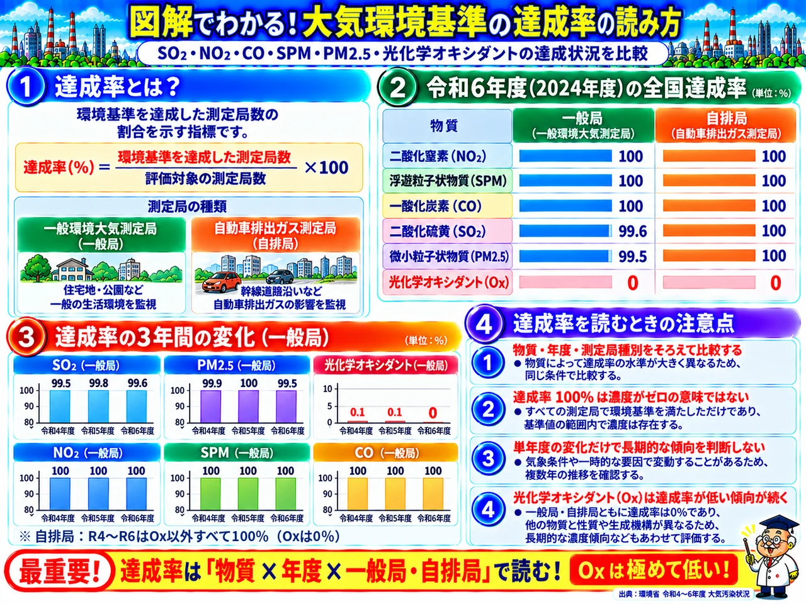

AIR POLLUTION OVERVIEW / ILLUSTRATED LESSON 28
大気環境基準の達成率の読み方
大気概論・テーマ28 ／ 環境統計・データ。重要な関係を図解で整理し、過去問演習に活用できます。
VISUAL GUIDE / THEME 28
図解で、全体像をつかむ。

※ 法令・環境基準・統計の数値や対象範囲は改正・更新される場合があります。図解とあわせて最新の一次資料をご確認ください。
大気概論・テーマ28 ／ 環境統計・データ。重要な関係を図解で整理し、過去問演習に活用できます。

※ 法令・環境基準・統計の数値や対象範囲は改正・更新される場合があります。図解とあわせて最新の一次資料をご確認ください。